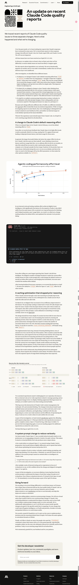

Anthropic 关于近期 Claude Code 质量报告的最新进展
本文最后更新于 2026年4月24日 下午
An update on recent Claude Code quality reports
部分用户反映 Claude 的响应速度变慢的报告。经查，这些报告源于三项不同的变更，分别影响了 Claude Code、Claude Agent SDK 和 Claude Cowork。API 未受影响。
截至 4 月 20 日（v2.1.116），所有三个问题均已解决。
三个不同的问题
3 月 4 日，我们将 Claude Code 的默认推理难度从 high medium 为中，以减少部分用户在 high 模式下遇到的过长延迟（延迟甚至导致界面卡顿）。但这一调整并不理想。4 月 7 日，在用户反馈他们更倾向于默认使用较高智能级别，并在处理简单任务时选择较低难度后，我们撤销了这一更改。此次调整影响了 Sonnet 4.6 和 Opus 4.6 版本。
3 月 26 日，我们发布了一项更改，旨在清除闲置超过一小时的会话中克劳德的旧思路，以减少用户恢复这些会话时的延迟。但一个错误导致此操作在会话剩余时间内每回合都会重复执行，而不是只执行一次，这使得克劳德看起来健忘且重复。我们已于 4 月 10 日修复了此问题。此问题影响了 Sonnet 4.6 和 Opus 4.6 版本。
4 月 16 日，我们添加了一条系统提示指令以减少冗余信息。但由于与其他提示信息的更改，该指令降低了代码质量，因此我们在 4 月 20 日撤销了该更改。此次更改影响了 Sonnet 4.6、Opus 4.6 和 Opus 4.7 版本。
这并非用户应有的 Claude Code 使用体验。自 4 月 23 日起，我们将重置所有订阅用户的使用限制。
修改默认推理难度
今年 2 月，我们在 Claude Code 中发布 Opus 4.6 时，将默认推理难度设置为 high 。
不久之后，我们收到用户反馈，Claude Opus 4.6 在高负荷模式下偶尔会思考时间过长，导致用户界面看起来冻结，并导致这些用户出现不成比例的延迟和令牌使用。
一般来说，模型思考的时间越长，输出结果就越好。Claude Code 通过“工作量级别”功能，让用户能够权衡这种权衡——更多的思考时间与更低的延迟和更少的使用限制。在为模型校准工作量级别时，我们会考虑这种权衡，以便在测试时间-计算时间曲线上选择能够为用户提供最佳选择范围的点。在产品层，我们会选择这条曲线上的哪个点作为默认值，并将该值作为工作量参数发送给 Messages API；然后，我们通过 /effort 提供其他选项。
在我们的内部评估和测试中，中等难度模式在大多数任务中实现了略低的智能水平，但延迟却显著降低。它也避免了偶尔出现的思考时间过长的问题，并有助于最大限度地利用用户的使用次数。因此，我们推出了一项更改，将中等难度模式设为默认模式，并通过产品内对话框解释了更改原因。
Claude Code 上线不久，用户就开始反映它的智能程度有所下降。我们进行了多次设计迭代，使当前的难度设置更加清晰，以便提醒用户可以更改默认设置（例如在启动时显示提示、添加内联难度选择器以及恢复超智能模式），但大多数用户仍然保留了中等难度的默认设置。
在听取了更多用户的反馈后，我们于 4 月 7 日撤销了这一决定。现在，所有用户在 Opus 4.7 上默认使用 xhigh 模式，在所有其他型号上默认使用 high 模式。
缓存优化放弃了先前的推理
当 Claude 推理完成一项任务时，该推理过程通常会保存在对话历史记录中，以便在后续的每一次操作中，Claude 都能看到它为什么进行了相应的编辑和工具调用。
3 月 26 日，我们发布了一项旨在提升该功能效率的更新。我们使用提示缓存来降低用户连续 API 调用的成本并加快速度。Claude 在发出 API 请求时会将输入令牌写入缓存，一段时间不活动后，该提示将从缓存中移除，从而为其他提示腾出空间。我们对缓存利用率进行了谨慎管理（更多详情请参见我们的方案 ）。
设计原本应该很简单：如果会话闲置超过一小时，我们可以通过清除旧的推理记录来降低用户恢复会话的成本。由于无论如何都会出现缓存未命中，我们可以从请求中剔除不必要的消息，从而减少发送到 API 的未缓存令牌的数量。之后，我们会恢复发送完整的推理历史记录。为此，我们使用了 clear_thinking_20251015 API 标头以及 keep:1 。
该实现存在一个漏洞。它没有只清除一次思维历史记录，而是在会话剩余时间内的每个回合都清除了它。当会话超过空闲阈值后，后续的每个请求都会指示 API 只保留最新的推理数据块，并丢弃之前的所有数据。这导致问题更加严重：如果在 Claude 使用工具的过程中发送后续消息，则会在“已损坏”标记下启动一个新的回合，因此即使是当前回合的推理也会被丢弃。Claude 会继续执行，但会越来越忘记它为什么选择执行当前操作。这就是用户报告的健忘、重复和奇怪的工具选择等问题。
由于这会持续地将逻辑块从后续请求中移除，导致这些请求也出现缓存未命中。我们认为这正是导致使用限额消耗速度超出预期的独立报告的原因。
两个不相关的实验使我们一开始很难重现这个问题：一个是与消息队列相关的内部服务器端实验；另一个是我们在显示思路方面做出的一个正交变化，这个变化抑制了大多数 CLI 会话中的这个错误，因此即使在测试外部构建时，我们也没有发现它。
这个 bug 出现在 Claude Code 的上下文管理、Anthropic API 和扩展思维的交汇处。它引入的更改通过了多次人工和自动化代码审查，以及单元测试、端到端测试、自动化验证和内部测试。再加上它只在极端情况下（陈旧会话）出现，而且难以重现，我们花了超过一周的时间才发现并确认了根本原因。
作为调查的一部分，我们使用 Opus 4.7 对存在问题的拉取请求进行了代码审查回测。在提供收集完整上下文所需的代码仓库后，Opus 4.7 发现了该错误，而 Opus 4.6 则未能发现。为了防止此类情况再次发生，我们现在正在为代码审查添加对更多代码仓库作为上下文的支持。
我们在 4 月 10 日的 v2.1.101 版本中修复了这个漏洞。
系统提示更改以减少冗长内容
我们最新的模型 Claude Opus 4.7 相对于其前代产品有一个显著的行为特点：正如我们在发布时所写 ，它的输出信息往往非常冗长。这使得它在处理难题时更加智能，但也产生了更多的输出标记。
在 Opus 4.7 发布前几周，我们就开始着手调整 Claude Code 以做准备工作。每个模型的行为都略有不同，因此在每次发布之前，我们都会花时间针对该模型优化框架和产品。
我们有很多工具可以减少冗余信息：模型训练、提示以及改进产品中的思维用户体验。最终我们使用了所有这些工具，但系统提示中的一项改进对 Claude Code 的智能产生了巨大的影响：
经过数周的内部测试，在我们运行的一系列评估中没有出现任何退化，我们对这一变化充满信心，并于 4 月 16 日与 Opus 4.7 一起发布了它。
作为调查的一部分，我们使用更广泛的评估数据集进行了更多消融试验（从系统提示中移除一行以了解每一行的影响）。其中一项评估显示，Opus 4.6 和 4.7 的性能均下降了 3%。我们在 4 月 20 日的版本中立即恢复了提示。
Going forward 展望未来
为了避免这些问题，我们将采取以下几项不同的措施：我们将确保更多内部员工使用 Claude Code 的公开版本（而不是我们用于测试新功能的版本）；我们将改进内部使用的代码审查工具，并将改进后的版本提供给客户。
我们还将加强对系统提示符变更的控制。对于 Claude Code 的每一次系统提示符变更，我们都会针对每个模型进行全面的评估，持续进行消融测试以了解每一行代码的影响。此外，我们还开发了新的工具，使提示符变更的审查和审计更加便捷。我们还在 CLAUDE.md 文件中添加了相关指南，以确保针对特定模型的变更仅限于其目标模型。对于任何可能影响智能性的变更，我们将增加测试期、扩展评估范围并逐步推出，以便尽早发现问题。
我们最近在 X 平台上创建了 @ClaudeDevs 账号，以便更深入地解释产品决策及其背后的原因。我们也会在 GitHub 的集中讨论帖中分享同样的更新。
最后，我们要感谢所有用户：正是那些使用 /feedback 命令向我们反馈问题（或在网上发布具体、可复现示例）的用户，才最终帮助我们发现并修复了这些问题。今天，我们将重置所有订阅用户的流量限制。
We’re immensely grateful for your feedback and for your patience.
参考：
